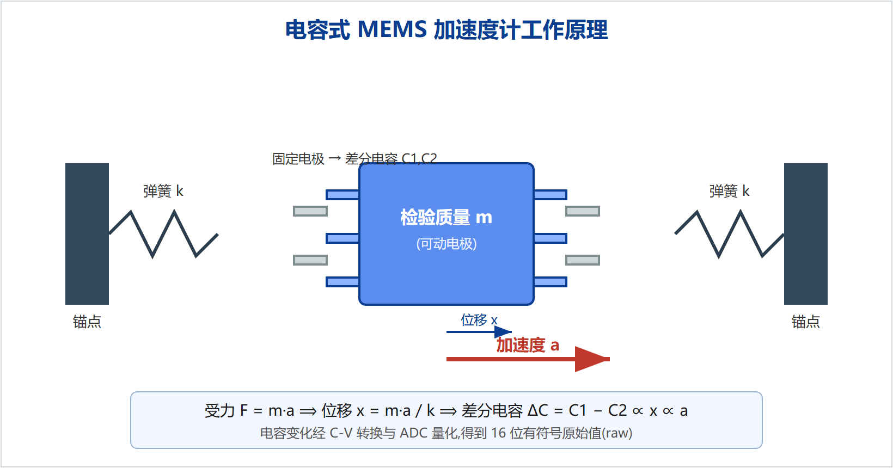
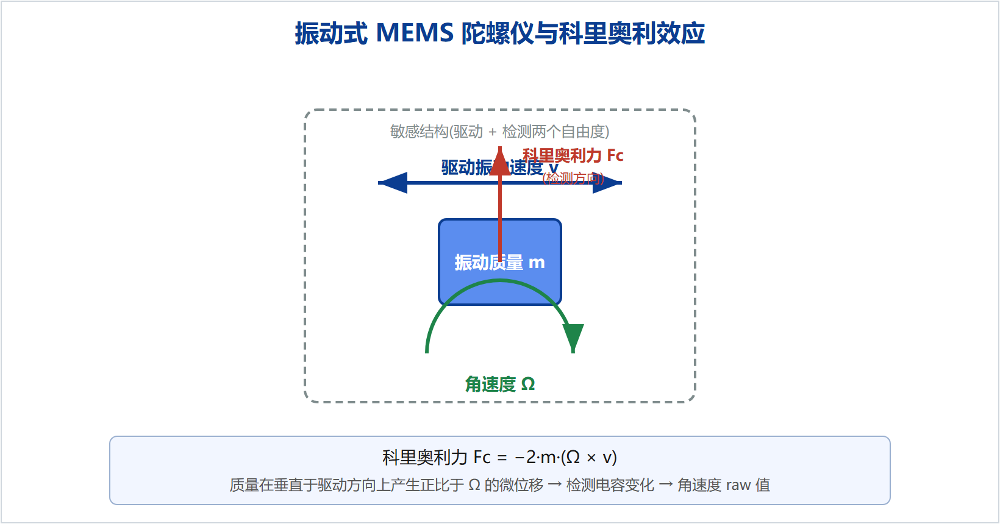
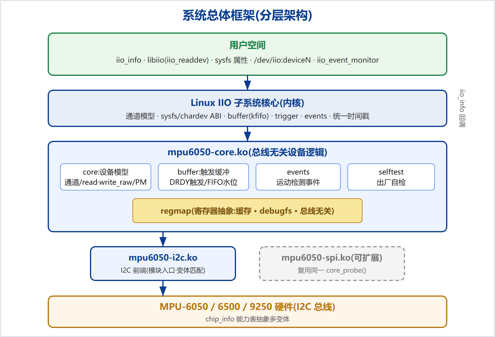
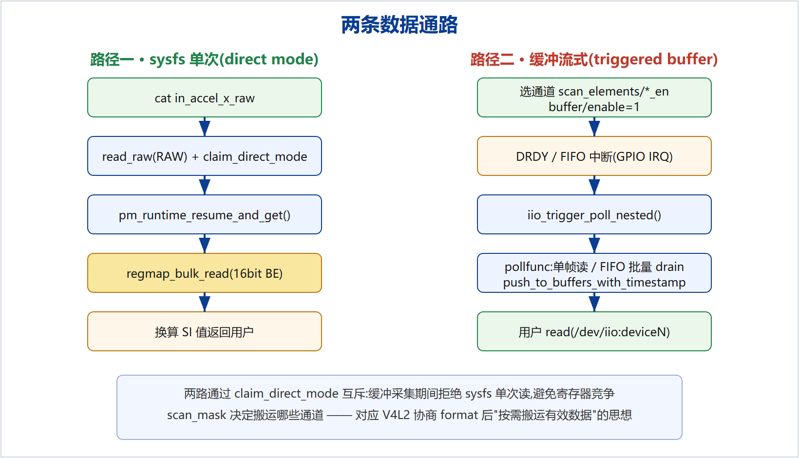
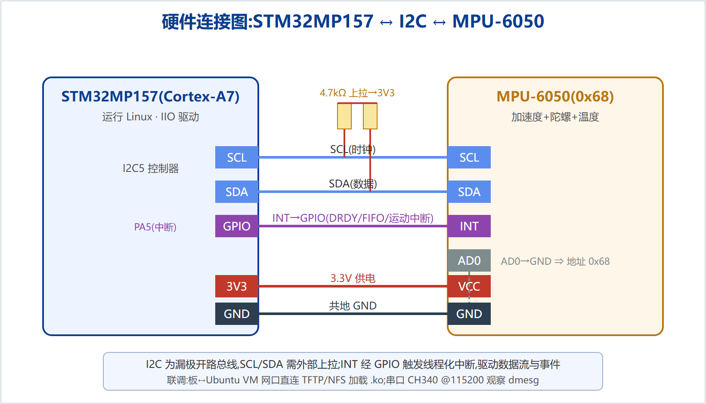
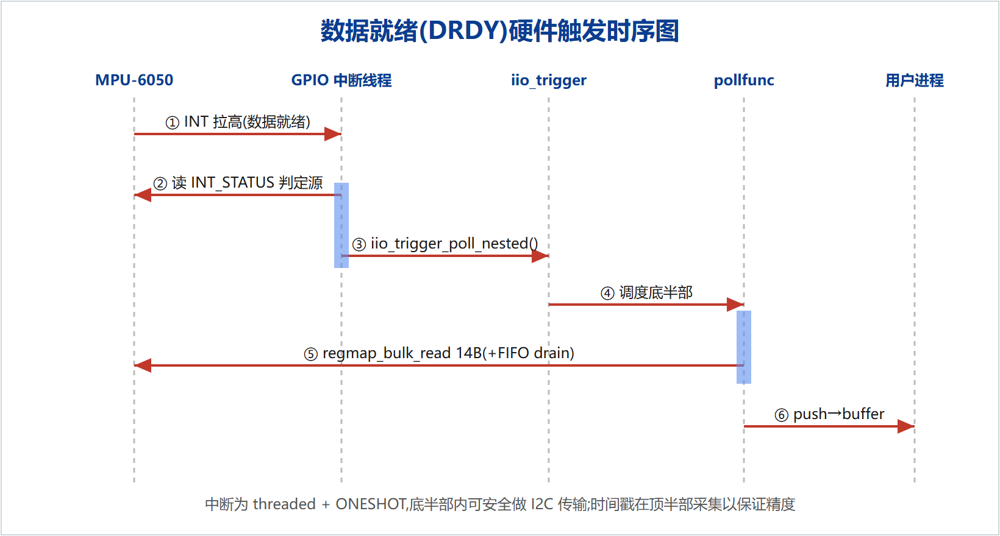
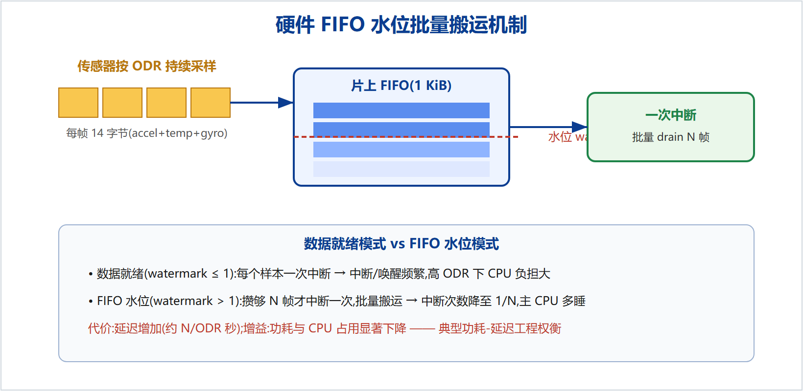
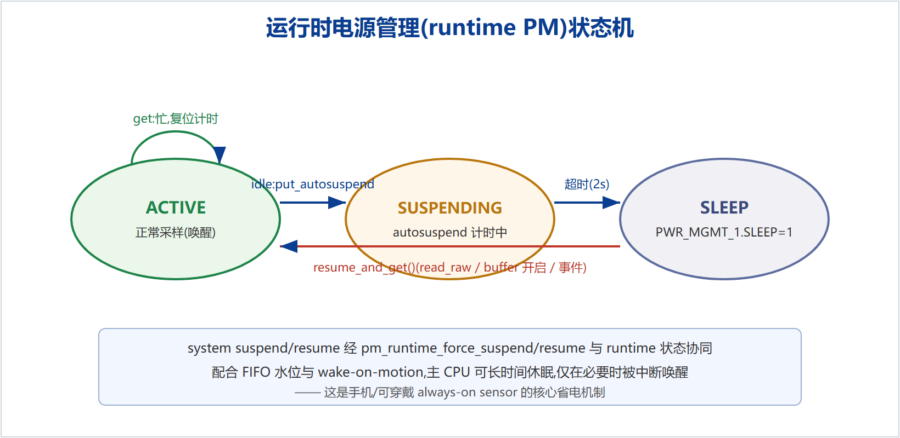

惯性测量单元(IMU)是移动与嵌入式设备实现姿态感知、运动检测与导航的基础器件。本项目面向 STM32MP157 嵌入式 Linux 平台,为 Invensense MPU-6050 系列六轴 IMU(三轴加速度计 + 三轴陀螺仪 + 温度)设计并实现了一个挂接在 Linux 工业 I/O(Industrial I/O,IIO)子系统下的、达到量产工程标准的内核设备驱动。
与网络上仅停留于"读取寄存器并打印"的示例不同,本驱动系统地实现了多芯片变体抽象、基于 regmap 的寄存器访问、可配置量程与采样率、数据就绪(DRDY)硬件触发的缓冲数据流、片上 FIFO 水位批量搬运、运动检测阈值事件、运行时电源管理(runtime PM)以及出厂自检等完整功能;并配套设备树绑定文档、sysfs ABI 文档、持续集成(CI)与用户态测试程序,采用与 Linux 主线 vendor 驱动一致的多文件模块化组织(core 与 i2c 分离)。
本文从 MEMS 惯性传感器的物理原理出发,依次阐述系统总体设计、硬件连接设计与软件详细实现,重点分析了触发缓冲、FIFO 水位、电源管理与并发控制等关键工程难点及其解决方案,并给出测试与验证方法。该项目验证了在通用 SoC 平台上以标准内核框架交付高完成度传感器驱动的可行性,可作为嵌入式 Linux 驱动 / BSP 方向的工程实践参考。
The Inertial Measurement Unit (IMU) is a fundamental component for attitude sensing, motion detection and navigation in mobile and embedded devices. This project designs and implements a production-grade Linux kernel driver for the Invensense MPU-6050 family six-axis IMU (3-axis accelerometer + 3-axis gyroscope + temperature) on the STM32MP157 embedded Linux platform, built on the Linux Industrial I/O (IIO) subsystem.
Unlike online examples that merely read registers and print values, this driver systematically implements multi-variant abstraction, regmap-based register access, configurable full-scale range and output data rate, a data-ready (DRDY) hardware-triggered buffered data path, on-chip FIFO watermark batching, motion-detection threshold events, runtime power management, and factory self-test. It is accompanied by device-tree bindings, sysfs ABI documentation, continuous integration and user-space test programs, and follows the multi-file modular organization (core / i2c split) of upstream Linux vendor drivers.
随着智能手机、可穿戴设备、无人机与机器人等产品的普及,惯性测量单元(IMU)已成为消费电子与工业设备中最基础、出货量最大的传感器之一。IMU 通过测量三轴加速度与三轴角速度,为屏幕旋转、计步、姿态解算、运动唤醒、跌落检测、导航融合等功能提供原始数据。在以 Linux 为操作系统的嵌入式平台上,传感器要被上层应用使用,必须由内核驱动将其接入标准的子系统框架,向用户空间暴露统一、稳定的接口。
然而,网络上绝大多数 MPU-6050 教程仅停留于"用 I2C 读取 14 字节数据寄存器并打印数值"的层面,既不接入内核子系统,也不涉及电源管理、并发保护、事件上报、缓冲搬运、测试与文档等真实工程要素。这类示例难以体现工程能力,也无法直接用于产品。因此,研究并实现一个"形态等同于企业量产交付"的传感器内核驱动,对于嵌入式 Linux 驱动 / BSP 方向的工程实践具有明确意义。
Linux 主线内核已在 drivers/iio/imu/ 下收录了多款 IMU 的 IIO 驱动,如 Invensense 的 inv_mpu6050、Bosch 的 bmi160、STMicroelectronics 的 st_lsm6dsx 等。这些驱动由芯片原厂与社区共同维护,普遍采用 regmap 抽象、触发缓冲、硬件 FIFO、runtime PM 等成熟机制,并遵循统一的 IIO 用户空间 ABI。工业界方面,高通、联发科等 SoC 厂商在其移动平台上构建了以 IIO / 传感器 HAL 为基础的传感器子系统,并高度重视 always-on 低功耗采集能力。
本项目在充分借鉴主线 inv_mpu6050 组织方式的基础上,从零自研一套精简但完整的 MPU-6050 系列驱动,目的在于完整掌握框架各层机制,而非移植既有代码。
本项目完成的主要工作包括:(1)基于 IIO 子系统实现 MPU-6050/6500/9250 多变体驱动,core 与 i2c 前端分离;(2)实现 accel/gyro/temp 通道及可配置量程与采样率;(3)实现 DRDY 硬件触发的缓冲数据流与片上 FIFO 水位批量搬运;(4)实现运动检测事件与 runtime 电源管理;(5)实现出厂自检;(6)配套设备树绑定、sysfs ABI 文档、GitHub Actions 持续集成与用户态测试程序。
本文共八章:第 2 章介绍 MEMS 传感器物理原理与 IIO 等支撑技术;第 3 章给出系统总体设计;第 4 章描述硬件连接与设备树;第 5 章详述软件实现;第 6 章分析关键难点;第 7 章给出测试与验证;第 8 章总结全文并展望。
MPU-6050 的加速度计采用微机电系统(MEMS)电容式结构。如图 2-1 所示,一个由弹簧悬挂的检验质量(proof mass)可沿敏感轴方向移动,其上带有可动电极,与固定电极构成一对差分电容。当器件受到加速度 a 时,检验质量因惯性产生位移 x,依据牛顿第二定律与胡克定律,有 x = m·a / k,其中 m 为质量、k 为弹簧刚度。位移改变两固定电极间的差分电容 ΔC,经电容-电压转换与模数转换后得到与加速度成正比的 16 位有符号原始值。

陀螺仪基于科里奥利(Coriolis)效应测量角速度。如图 2-2 所示,检验质量沿驱动方向做受控高频振动,速度为 v;当器件绕敏感轴以角速度 Ω 旋转时,质量在垂直于驱动方向上受到科里奥利力 Fc = −2m(Ω × v),产生正比于 Ω 的微位移,由检测电容拾取,从而得到角速度原始值。驱动与检测两个自由度的正交设计是 MEMS 陀螺的核心。

MPU-6050 集成三轴加速度计、三轴陀螺仪与温度传感器,通过 I2C(地址 0x68/0x69,由 AD0 决定)通信。加速度计支持 ±2/4/8/16 g 四档量程,陀螺仪支持 ±250/500/1000/2000 dps 四档量程,均为 16 位输出。芯片内置 1 KiB 硬件 FIFO 与可编程中断(数据就绪、FIFO 溢出、运动检测),数据寄存器自 ACCEL_XOUT_H(0x3B)起连续 14 字节(加速度 6 + 温度 2 + 陀螺 6),便于一次突发读取。
一句话概括:IIO(Industrial I/O,工业 I/O)是 Linux 内核里专门管理"传感器 / 数据采集类设备"的一套标准接口规范。可以把它理解为传感器界的"USB 标准"或"国标插座"。
为什么需要它?世界上传感器成千上万——加速度、陀螺、光照、温湿、气压、ADC……如果每家驱动都自定义一套"怎么读数据"的方式,应用程序就得为每一颗传感器单独适配,生态一片混乱。IIO 规定了统一的"读数据的插口":无论底层是哪颗芯片,应用都用同样的方式访问(读 /sys/bus/iio/... 属性或 /dev/iio:deviceN 字符设备)。这样一来,上层应用、Android 传感器框架、libiio 库,一套代码就能通吃各种传感器。
打个比方:驱动开发者的工作,是把某颗传感器"翻译"成 IIO 标准语言;而应用只需要会说 IIO 标准语言,不必懂每颗芯片的寄存器细节。IIO 就是中间那个"翻译官 + 标准插座"。它主要提供四样东西(用大白话说):
① 通道(channel)——传感器能测量的每一个量就是一个通道。MPU-6050 有加速度 x/y/z、角速度 x/y/z、温度,共 7 个通道。
② sysfs 属性——像读文件一样 cat 一下就得到一个瞬时值,例如 in_accel_x_raw。
③ 缓冲(buffer)+ 字符设备——需要高速连续采集时,数据先攒进内核缓冲,应用像读数据流一样 read /dev/iio:deviceN。
④ 触发(trigger)与事件(event)——"触发"决定何时采一个样(定时器,或传感器自己的数据就绪中断);"事件"用于"超过阈值主动通知你"(如运动检测)。
它和你已经学过的字符设备是什么关系?IIO 底层其实也是建立在字符设备与 sysfs 之上的,只是在上面加了一层"传感器专用的标准结构"。所以字符设备知识是地基,IIO 是盖在这块地基上、已经标准化好的"楼房"——你不必从零造轮子。下表把大白话与 IIO 术语对应起来:
| 大白话 | IIO 术语 / 接口 |
|---|---|
| 传感器能测的一个量 | 通道 channel(iio_chan_spec) |
| 读一个瞬时值 | sysfs 属性 in_*_raw |
| 连续采集的数据流 | 缓冲 buffer + /dev/iio:deviceN |
| 谁来决定"现在采样" | 触发 trigger |
| 超阈值主动通知 | 事件 event |
| 原始值→物理单位换算 | scale / offset 属性 |
工业 I/O(IIO)子系统是 Linux 为 ADC、传感器等数据采集类设备提供的标准框架,与相机领域的 V4L2 同源:二者都由"统一设备模型 + 标准用户空间 ABI + 可选缓冲/硬件触发数据流"构成。IIO 通过 iio_chan_spec 描述通道能力,通过 sysfs 暴露单次读取属性,通过 /dev/iio:deviceN 字符设备提供缓冲流式数据,并支持触发(trigger)与事件(event)机制。本项目正是将 MPU-6050 接入这一框架。
regmap：内核统一的寄存器访问抽象,提供读写、缓存与 debugfs 寄存器导出,并使驱动与具体总线解耦。设备树(Device Tree)：以 compatible 字符串描述硬件并匹配驱动,声明 I2C 地址、中断与供电。线程化中断(threaded IRQ)：将中断底半部放入内核线程,允许在其中安全执行 I2C 传输。runtime PM：运行时电源管理框架,支持空闲自动挂起与按需唤醒。
系统需满足以下需求:功能上,提供加速度、角速度、温度的单次与连续采集,支持量程/采样率配置、硬件触发缓冲、运动事件与自检;非功能上,遵循 IIO 标准 ABI、具备良好的低功耗特性、保证并发安全、易于扩展到 SPI 等其他总线、并具备完整文档与可持续集成的工程规范。
系统采用分层架构,如图 3-1 所示。自上而下依次为:用户空间(iio_info / libiio / sysfs / 字符设备)、IIO 核心、mpu6050-core.ko(总线无关设备逻辑,内部再分 core/buffer/events/selftest 四个编译单元)、regmap 抽象、总线前端(mpu6050-i2c.ko,并预留 SPI)、以及底层 MPU-6050 硬件。core 与 i2c 分离,使得将来新增 SPI 前端仅需复用同一 mpu6050_core_probe()。

| 模块 | 文件 | 职责 |
|---|---|---|
| 核心 | mpu6050_core.c | 设备模型、通道、read/write_raw、电源管理、probe 入口 |
| 总线前端 | mpu6050_i2c.c | I2C 匹配与 regmap 创建,模块入口 |
| 缓冲 | mpu6050_buffer.c | 触发缓冲、DRDY 触发、FIFO 水位 |
| 事件 | mpu6050_events.c | 运动检测阈值事件 |
| 自检 | mpu6050_selftest.c | 出厂自检(sysfs) |
| 头文件 | mpu6050.h | 寄存器映射、chip_info、状态结构、原型 |
系统设计两条数据通路,如图 3-2 所示。路径一为 sysfs 单次读取:用户读取 in_accel_x_raw,驱动在 direct 模式下唤醒芯片、突发读取寄存器并换算返回。路径二为缓冲流式:用户选择扫描通道并使能缓冲后,由 DRDY/FIFO 中断驱动底半部批量搬运数据到内核缓冲,用户经字符设备读取。两路通过 claim_direct_mode 互斥。

目标平台为 100ASK STM32MP157 PRO 开发板,主控为意法半导体 STM32MP157(双核 Cortex-A7 + Cortex-M4),运行完整 Linux。传感器为 MPU-6050 模块,经 I2C 与主控相连。
硬件连接如图 4-1 所示。MPU-6050 的 SCL、SDA 分别接主控 I2C 控制器,并通过约 4.7 kΩ 电阻上拉至 3.3 V(I2C 为漏极开路总线,必须外部上拉);INT 引脚接一路 GPIO,用于数据就绪、FIFO 溢出与运动检测中断;AD0 接地使器件地址为 0x68;VCC 接 3.3 V,GND 与主控共地。

在设备树中以子节点描述该器件,声明 compatible、I2C 地址、中断父节点与引脚、供电等,内核据此匹配驱动并获取资源:
&i2c5 {
status = "okay";
clock-frequency = <400000>;
imu@68 {
compatible = "invensense,mpu6050";
reg = <0x68>;
interrupt-parent = <&gpioa>;
interrupts = <5 IRQ_TYPE_EDGE_RISING>;
vdd-supply = <&v3v3>;
};
};
开发板经 USB 网口转换器与 Ubuntu 虚拟机网口直连,虚拟机提供 TFTP/NFS 服务用于加载内核模块;主控串口经 CH340 以 115200 波特率输出内核日志(dmesg),便于调试。交叉编译在虚拟机上使用 arm-linux-gnueabihf- 工具链完成。
I2C 前端在 probe 中创建 regmap 并调用核心探测函数。核心探测依次完成:分配 iio_dev 与私有状态、使能供电、读取 WHO_AM_I 校验芯片(与 chip_info 表中期望值比对)、复位并唤醒芯片、配置默认量程与采样率,最后注册缓冲、事件、电源管理与 IIO 设备。所有资源均以 devm_ 托管,错误路径统一用 dev_err_probe。
驱动以 iio_chan_spec 数组描述 accel x/y/z、gyro x/y/z、temp 及软件时间戳通道。read_raw 支持原始值、量程(SCALE)、偏置(OFFSET)与采样率;write_raw 支持量程与采样率配置;并提供 *_available 列表。原始值读取以 regmap 突发读取 16 位大端数据并转为有符号数。量程换算将四档全量程映射为国际单位每-LSB 值。采样率通过 SMPLRT_DIV 寄存器设置,满足 rate = 1000/(1+div)。
缓冲数据流是本驱动的核心。驱动通过 iio_triggered_buffer_setup 挂接 kfifo 缓冲与底半部处理函数,并注册一个数据就绪触发。DRDY 硬件触发的时序如图 5-1 所示:芯片 INT 拉高后,线程化中断读取 INT_STATUS 判定中断源,调用 iio_trigger_poll_nested 唤醒底半部;底半部按扫描掩码突发读取数据并打上时间戳,推入内核缓冲,用户经字符设备读取。

为降低高采样率下的中断与唤醒开销,驱动实现了片上 FIFO 水位批量搬运,如图 5-2 所示。当水位阈值大于 1 时,传感器将样本持续写入 1 KiB 硬件 FIFO,累积到阈值才触发一次中断,底半部据 FIFO_COUNT 逐 14 字节帧批量搬运。相比每样本一次中断,中断次数降至 1/N,显著降低功耗与 CPU 占用,代价是引入约 N/ODR 的延迟——这是典型的功耗-延迟工程权衡。

驱动将加速度计的运动中断封装为标准的 IIO 上升沿幅值事件。用户通过 sysfs 写入阈值(MOT_THR 寄存器)并使能事件后,加速度超过阈值即由中断上报事件到事件队列,可用于"运动唤醒"而无需轮询。
驱动采用 runtime PM,状态机如图 5-3 所示。设备空闲一段时间(默认 2 秒)后经 autosuspend 自动进入 sleep(置 PWR_MGMT_1.SLEEP);单次读取、缓冲开启或事件到来时经 pm_runtime_resume_and_get 唤醒。系统级挂起/恢复经 pm_runtime_force_suspend/resume 与运行时状态协同。配合 FIFO 水位与运动唤醒,主 CPU 可长时间休眠。

驱动通过 sysfs 属性触发出厂自检。由于内核禁用浮点,自检采用整数实现:对每一轴分别在自检激励关闭与开启两种状态下多次采样求均值,以二者之差(自检响应)是否落在依据数据手册确定的绝对计数窗口内判定通过与否,读取后恢复正常配置。
| 难点 | 问题 | 解决方案 |
|---|---|---|
| 框架抽象与分层 | 如何做到总线无关、可扩展,而非把 I2C 写死 | 仿主线 inv_mpu6050,拆 core+i2c 两模块;core 仅依赖 regmap 与 iio,前端经 core_probe 注入 |
| 缓冲与硬件触发 | 如何把"中断→批量搬运→用户读"接起来并与单次读互斥 | triggered buffer + iio_trigger;线程化中断中 poll;单次读用 claim_direct_mode 互斥 |
| FIFO 水位 | 高 ODR 下每样本中断功耗高 | 水位>1 时启用片上 FIFO,按 FIFO_COUNT 逐帧 drain,经标准 hwfifo ABI 暴露 |
| 电源管理 | 省电与随取随用的平衡 | runtime PM autosuspend;读取/缓冲前 resume;系统睡眠走 force_suspend/resume |
| 自检整数化 | 内核禁浮点,手册为浮点公式 | 用整数绝对窗口判定自检响应,浮点 factory-trim 作为扩展 |
| 并发正确性 | 配置写/单次读/缓冲/事件并发访问寄存器 | mutex 串行化;缓冲期拒绝 direct 读;中断 threaded+ONESHOT |
| 跨内核兼容 | 目标板 5.4 BSP 缺新 API | 基线定为 5.15/6.1,为 5.4 提供最小兼容 shim;CI 对 6.1/6.6 双版本编译 |
| 大小端与打包 | 16 位大端输出,缓冲需按 scan_index 对齐 | scan_type 声明 IIO_BE/16bit;寄存器块顺序与枚举一致,整块读入即合法负载 |
测试分三层:编译层由 GitHub Actions 对 Linux 6.1/6.6 交叉编译并运行 checkpatch 风格检查;单元行为层由用户态程序读取 sysfs 并交叉验证物理量;系统层在真实开发板上按里程碑逐项点亮。
| 里程碑 | 内容 | 验收标准 |
|---|---|---|
| M1 板级 bring-up | 设备树 + probe + WHO_AM_I + regmap | dmesg 见设备,i2cdetect 见 0x68 |
| M2 通道与量程 | read/write_raw、scale/ODR、available | 静止合加速度 ≈ 9.8 m/s²,iio_info 正常 |
| M3 触发缓冲 | 软件触发跑通缓冲管道 | iio_readdev 输出非空 |
| M4 硬件触发与进阶 | DRDY 触发、FIFO、PM、事件、自检 | 100 Hz 自动流、事件可捕获、自检通过 |
关键验证包括:以静止时加速度合矢量应约等于重力加速度 9.8 m/s² 校验量程换算正确;以 iio_readdev 采集速率与设定采样率一致校验触发链路;以相邻样本时间戳差校验时序;以错误 I2C 地址触发 probe 干净失败校验错误处理。
本项目在 STM32MP157 平台上基于 Linux IIO 子系统,从零实现了一个达到量产工程标准的 MPU-6050 系列惯性传感器驱动,完整覆盖多变体抽象、触发缓冲、FIFO 水位、运动事件、电源管理与自检,并配套设备树绑定、ABI 文档、持续集成与测试。项目验证了以标准内核框架在通用 SoC 平台交付高完成度传感器驱动的方法与可行性。
后续可从以下方向扩展:增加 SPI 总线前端;实现 mount-matrix 安装旋转;支持 MPU-9250 的磁力计与 DMP;为 FIFO 水位路径实现逐帧时间戳插值;以及完善基于数据手册浮点公式的完整出厂自检。
[1] InvenSense. MPU-6000 and MPU-6050 Product Specification, Rev 3.4. 2013.
[2] InvenSense. MPU-6000/MPU-6050 Register Map and Descriptions, Rev 4.2. 2013.
[3] Linux Kernel Documentation. Industrial I/O (IIO) subsystem. kernel.org/doc.
[4] Linux Kernel Source. drivers/iio/imu/inv_mpu6050/. torvalds/linux.
[5] Jonathan Cameron. Industrial I/O — the state of the union. Linux Plumbers Conference.
[6] STMicroelectronics. STM32MP157 Reference Manual (RM0436).
[7] Linux Kernel Documentation. Device Tree Usage; regmap API; Runtime Power Management.
以下问答围绕本项目展开,覆盖大厂嵌入式驱动岗常见追问。建议每一条都做到"张口能答、能展开、能讲权衡"。
Q0 你研二在实验室,为什么会做这个驱动项目?(动机)
答:其实不算突然,而是自然延伸。我实验室方向是嵌入式 AI / TinyML,典型应用就是用 IMU 这类传感器数据在边缘端做活动识别、手势与振动检测。我在部署模型、采集数据时长期使用 MPU-6050 这类传感器,但逐渐意识到:自己对上层模型很熟,却对"数据究竟怎么从硬件、经过 I2C 与操作系统,最终到我手里"这一层几乎是黑盒。做边缘 AI 却不理解它脚下的操作系统与驱动层,这让我不踏实。于是我在实验室同一块 STM32MP157 上,从零做了这个挂在 Linux IIO 框架下的驱动,把从硬件、I2C、设备树、内核框架到用户空间的整条链路彻底打通。
动机要点(讲给面试官的逻辑):
① 同一块板卡(MP157)——源自手边真实工作,而非凭空立项;② 传感器正是 TinyML 的数据输入,联系紧密;③ 出发点是"填补自己对底层链路的认知盲区",体现自我觉察与主动性;④ 解释了"为什么是现在":在 AI 部署中撞到这层墙,自然向下深挖,补齐嵌入式全栈能力。
常见追问应对:与课题的关系——"课题偏上层模型,本项目补的是下层工程能力,两者拼起来才是完整的边缘 AI 全栈";时间投入——"利用课余与项目间隙完成,不影响课题进度";研究还是工程——"更想做偏工程落地的嵌入式底层,这个项目正是对该方向的验证与积累"。建议叙述始终不超出事实。
Q1 什么是 IIO?为什么不直接用裸字符设备?
答:IIO 是 Linux 管理传感器/数据采集设备的标准子系统,提供统一的通道模型、sysfs 属性、缓冲字符设备、触发与事件。用它而非裸字符设备,是为了复用一整套成熟机制(缓冲队列、触发、时间戳、标准 ABI),让上层应用无需为每颗芯片单独适配;裸字符设备则要自己造这些轮子且不通用。
Q2 IIO 和 V4L2 是什么关系?
答:二者同源,都是"统一设备模型 + 标准用户空间 ABI + 可选缓冲/硬件触发数据流"。对照关系:iio_chan_spec↔ enum_fmt、scan_mask 选通道↔ 协商 format、iio_buffer↔ vb2_queue、DRDY 中断触发↔ frame-done 中断、read(/dev/iio:deviceN)↔ VIDIOC_DQBUF。
Q3 iio_chan_spec 里的 scan_index / scan_type 有什么用?
答:scan_index 决定该通道在缓冲扫描负载中的排列次序;scan_type 声明位宽、存储位宽、符号与大小端(本项目为有符号 16 位大端 IIO_BE)。缓冲搬运时内核据此按 scan_mask 打包数据。
Q4 probe 里做了哪些事?为什么用 regmap?
答:probe 依次分配 iio_dev 与私有状态、使能供电、读 WHO_AM_I 校验芯片、复位并唤醒、配置默认量程/采样率,再注册缓冲、事件、PM 与 IIO 设备。用 regmap 是因为它统一了寄存器读写、自带缓存与 debugfs 导出,并使驱动与具体总线解耦——换 SPI 时核心代码零改动。
Q5 为什么把 core 和 i2c 拆成两个模块?
答:仿主线 inv_mpu6050。总线无关的设备逻辑放 core,总线相关放前端;将来新增 SPI 只需再写一个前端调用同一 mpu6050_core_probe(),core 不动一行。这是"面向接口、可独立演进"的边界设计。
Q6 设备和驱动是怎么匹配上的?
答:设备树节点的 compatible 字符串与驱动的 of_device_id 表匹配,内核 OF 框架据此绑定并调用 probe;of_device_id 的 .data 携带芯片变体信息。
Q7 devm_ 系列有什么好处?
答:设备生命周期托管资源,设备移除或 probe 失败时自动逆序释放,免去手写 remove 与易错的错误回退路径,减少资源泄漏。
Q8 为什么用线程化中断(threaded IRQ)而不是普通顶半部?
答:因为中断处理里要通过 I2C 读传感器,而 I2C 传输可能睡眠,不能在原子的顶半部上下文执行。线程化中断把处理放进内核线程,允许睡眠,配合 ONESHOT 保证处理完再开中断。
Q9 中断里能用 mutex 吗?spinlock 与 mutex 怎么选?
答:普通(硬)中断上下文不能睡,不能用 mutex,只能用 spinlock;本项目中断是线程化的,处于可睡眠上下文,故可用 mutex。选择原则:临界区短、不睡、可能被中断上下文访问→ spinlock;临界区长或涉及睡眠(如 I2C)→ mutex。
Q10 claim_direct_mode 解决什么问题?
答:防止"缓冲采集"与"sysfs 单次读"并发访问寄存器造成竞争。开启缓冲后 sysfs 单次读会被拒绝(-EBUSY),二者互斥。
Q11 请完整讲一遍从中断到用户 read 的数据流。
答:传感器 INT 拉高→ GPIO 线程化中断读 INT_STATUS 判源→ iio_trigger_poll_nested 唤醒底半部 pollfunc→ pollfunc 突发读 14 字节(或按 FIFO_COUNT 批量 drain)并打时间戳→ iio_push_to_buffers_with_timestamp 入 kfifo→ 用户 read(/dev/iio:deviceN) 取出。
Q12 runtime PM 是什么?autosuspend 怎么工作?
答:运行时电源管理,按引用计数管理设备是否活动。设备空闲(计数归零)并超过 autosuspend 延时后自动挂起(本项目置芯片 SLEEP);被访问时 resume_and_get 唤醒。系统级睡眠经 pm_runtime_force_suspend/resume 与之协同。
Q13 FIFO 水位为什么省电?代价是什么?
答:不再每个样本中断一次,而是攒够 N 帧到片上 FIFO 才中断一次,中断/唤醒次数降到 1/N,CPU 可多睡,功耗下降;代价是引入约 N/ODR 的延迟。典型的功耗-延迟权衡。
Q14 wake-on-motion 有什么意义?
答:主机可休眠,靠加速度超阈值的运动中断唤醒,而非持续轮询,是 always-on 场景的关键省电手段。
Q15 raw 值怎么变成 m/s²?scale 从哪来?
答:物理量 = raw × scale。加速度 scale = 9.80665 × 量程(g)/ 32768;陀螺 scale =(π/180)× 量程(dps)/ 32768。驱动按当前量程档位返回对应 scale,用户乘算即得 SI 值。
Q16 为什么 scan_type 用大端(IIO_BE)?
答:MPU-6050 数据寄存器高字节在前(大端),突发读入的 16 位需按大端解释再转有符号;声明 IIO_BE 让 IIO 与用户态按正确字节序理解缓冲数据。
Q17 采样率怎么设?
答:通过 SMPLRT_DIV,输出率 = 内部基准率 /(1+div)(DLPF 开启时基准 1 kHz),驱动校验合法档位后写寄存器并回读一致。
Q18 volatile 的作用?和寄存器访问什么关系?
答:volatile 告诉编译器该变量可能被外部(硬件/其他线程)改变,禁止把读写优化掉或缓存到寄存器,保证每次都真正访存。MMIO 寄存器访问要用 volatile 语义(内核用 readl/writel 等封装),否则可能读到过期值或丢写。
Q19 内存屏障 / DMA 一致性简述。
答:屏障用于约束乱序执行/编译器重排,保证跨核或与设备交互时的可见性与顺序(如 wmb/rmb、dma_wmb)。DMA 场景需保证 CPU 缓存与设备看到的数据一致,用 dma_map/unmap 或一致性内存。本项目走 I2C 无 DMA,但概念是通用考点。
Q20 怎么调试内核驱动?
答:dev_dbg/dynamic debug 动态开日志、printk 观察流程、debugfs(regmap 寄存器导出)、ftrace/trace_printk 看时序、/proc/interrupts 看中断计数、逻辑分析仪抓 I2C/INT 波形、oops/panic 看调用栈,必要时 kgdb。
Q21 和主线 inv_mpu6050 比,你这个缺什么?
答:主线支持更全(DMP、magn、更完整的 FIFO/时间戳/自检浮点公式、i2c-mux 从设备等)。我这个是为吃透框架而自研的精简版,self-test 用整数近似、FIFO 时间戳整批共用,均在文档中如实标注。价值在于我能解释每一行,而非移植。
Q22 你遇到的最大坑是什么?
答:(结合实测填写)如跨内核版本 API 差异(5.4 BSP 缺 pm_runtime_resume_and_get 等)、中断上下文不能睡导致必须线程化、缓冲与单次读的并发互斥、大小端与 scan 打包对齐等。
Q23 还有什么没做好、下一步怎么改?
答:FIFO 水位逐帧时间戳插值、完整浮点 factory-trim 自检、SPI 前端、mount-matrix、9250 磁力计/DMP。承认边界比假装完美更可信。
目标:把"代码写好"变成"真板跑通并有证据"。按顺序逐项打勾。
| 项 | 命令 / 做法 | 期望 |
|---|---|---|
| 内核源码与工具链 | 虚拟机上确认 MP157 内核源码路径与 arm-linux-gnueabihf- 工具链 | 能编内核模块 |
| IIO 配置 | zcat /proc/config.gz | grep -E "IIO|REGMAP_I2C" | CONFIG_IIO/IIO_BUFFER/IIO_TRIGGERED_BUFFER/IIO_SYSFS_TRIGGER/REGMAP_I2C 为 y 或 m |
| I2C 总线 | i2cdetect -y <bus> | 0x68 处出现设备 |
| 内核版本 | uname -r | 确定是否需 B.2 兼容 shim(< 5.15) |
若板子内核低于 5.15/5.10,新建 compat.h 并在各 .c 顶部包含,提供缺失符号:
#include <linux/version.h>
#if LINUX_VERSION_CODE < KERNEL_VERSION(5,9,0)
/* dev_err_probe:简化版(不特判 EPROBE_DEFER,bring-up 足够) */
#define dev_err_probe(dev, err, fmt, ...) \
({ dev_err(dev, fmt, ##__VA_ARGS__); (err); })
#endif
#if LINUX_VERSION_CODE < KERNEL_VERSION(5,10,0)
static inline int pm_runtime_resume_and_get(struct device *dev)
{ int r = pm_runtime_get_sync(dev); if (r < 0) pm_runtime_put_noidle(dev); return r; }
#endif
#if LINUX_VERSION_CODE < KERNEL_VERSION(5,15,0)
static inline void mpu6050_pm_off(void *d) { pm_runtime_disable(d); }
#define devm_pm_runtime_enable(d) \
({ pm_runtime_enable(d); devm_add_action_or_reset(d, mpu6050_pm_off, d); })
#endif
另注:regmap_noinc_read 自 5.4 起提供;若更老可用循环多次 regmap_read(FIFO_R_W) 替代。老内核 i2c 驱动 probe 原型为 probe(client, id),如报错按此改。
cd drivers/iio/imu/mpu6050 make KDIR=/path/to/mp157-kernel ARCH=arm CROSS_COMPILE=arm-linux-gnueabihf- # 期望产出:mpu6050-core.ko mpu6050-i2c.ko,无 error
把 dt/stm32mp157-mpu6050-overlay.dts 的 I2C 控制器、INT 所接 GPIO 改成实际接线,编译进 dtb 或做 overlay,重启。
insmod mpu6050-core.ko && insmod mpu6050-i2c.ko # 先 core 后 i2c
dmesg | tail # M1:mpu6050 registered (irq=..)
D=/sys/bus/iio/devices/iio:device0
iio_info # M2:枚举通道/属性
cat $D/in_accel_scale $D/in_accel_z_raw # M2:静止 |a|≈9.8
# M3/M4:缓冲流
for a in x y z; do echo 1 > $D/scan_elements/in_accel_${a}_en; done
echo 1 > $D/scan_elements/in_timestamp_en
echo 100 > $D/sampling_frequency
echo $(cat $D/name)-dev0 > $D/trigger/current_trigger
echo 1 > $D/buffer/enable
timeout 2 iio_readdev -b 64 iio:device0 | wc -c # ≈200 样本/2s
echo 0 > $D/buffer/enable
| 证据 | 怎么拿 |
|---|---|
| probe 成功日志 | dmesg 截图(含 WHO_AM_I / registered) |
| 通道枚举 | iio_info 输出截图 |
| 量程正确 | read_raw 程序输出 |a|≈9.8 截图 |
| 缓冲吞吐 | iio_readdev 速率与设定 ODR 一致 |
| 硬件时序 | 逻辑分析仪抓 I2C 波形 + INT 中断脉冲 |
| 中断计数 | cat /proc/interrupts | grep mpu6050 增长 |
| 现象 | 可能原因 | 排查 |
|---|---|---|
| i2cdetect 看不到 0x68 | 接线/上拉/AD0/供电 | 查 SCL/SDA 上拉、AD0 电平、3V3、共地 |
| probe 报 WHO_AM_I 不符 | 地址错/串扰/假货 | 确认 0x68/0x69,降 I2C 速率到 100k 试 |
| 缓冲无数据 | 触发未选/中断没接 | 确认 current_trigger 已设、/proc/interrupts 计数增长 |
| 数据恒为 0 或不变 | 芯片仍在 sleep | 确认唤醒(PWR_MGMT_1)、DLPF/采样率配置 |
| 编译报符号未定义 | 内核版本低 | 按 B.2 加兼容 shim |
本文所述项目为学习与作品集用途,非 Invensense 官方驱动。源码仓库:github.com/fyy0619-cell/xiangmu